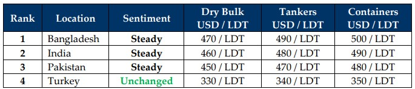

inWeekly Demolition Reports11/11/2024

Taking the limelight for all of 2024 was this week, where President-elect Donald J. Trump won the 47th Presidency of the United Statesof America, the ripples of which have already had near & far-reaching effects across a spectrum of positives and negatives resulting from the shockwave of his unprecedented victory. Starting with the immediate blast zone around his win, we saw swathes of protests not only from voters from the other side (no one’s thankfully breached the Capital, yet), but also from thousands of undocumented members from the Latino communities, some of whom reportedly even managed to vote for Trump, who are now fearing their imminent deportation come January 2025 amidst Trump’s ongoing rhetoric on shutting down the border and deporting all illegals. As these communities now march in (impending karmic) solidarity, the outer reaches of the blast from Trump’s victory also saw him issue a warning to Hamas to release the remaining 97 hostages before he takes office on January 20th. In light of his statements and 3 reported phone calls with PM Benjamin Netanyahu, Qatar has now bowed out of the negotiations as mediator between Hamas and Israel on account of Hamas’s failure to respond constructively and in time, whilst simultaneously vacating Hamas’s Qatari office. While some fear that Trump’s war-posturing will poke an exceedingly sensitive situation with the Iranians amidst their threats of counterattacks against Israel (resulting in compounding problems for the world), the Houthis have in the interim, engaged in talks of easing off their own attacks in the Red Sea Lanes, the likelihood of which would see logistical (and subsequently economic) constraints loosening sooner rather than later, which saw the American markets surge and Bitcoin reach record highs before the week ended (phew)! As the U.S. Fed also announced another 0.25% reduction in interest rates whilst inflation continues to hover around 2%, the U.S. Dollar surged against all ship recycling nation currencies in unison, making it that much more expensive to purchase recycling units.
For now, his win has certainly returned a modicum of stability to the ship recycling industry, with about USD 10/LDT gained across the board and Bangladesh leapfrogging India for pole position this week, including the purchases of 2 Panamax Bulk Carriers in the USD 470s/LDT. Although the general feeling is that sub-continent ship recycling markets have likely bottomed out, there remains cautious optimism within the community as we head towards 2025. We aren’t suggesting that markets will hit or even exceed the ever-coveted USD 500/LDT mark before Q1 2025. However, the bleeding has seemingly abated and a period of consolidation ahead of Trump’s inauguration on January 20th, 2025 is expected. And despite the short-term post U.S. election bounce in both trading and ship recycling markets, until Trump takes office and the incoming administration lays out its Middle Eastern & Global policies early next year, no major moves in the shipping markets will be permanent. Finally, as TSMC announces its own decision to not manufacture or export its AI Chips to China, all eyes will now be on how Mr. Trump’s tariff war with China develops and what policies will finally be implemented next year. While the U.S. debt is expected to increase under the Republican run administration and global inflationary pressures will persist into 2025, there is optimism on the state of the trading & recycling markets. So keep an eye on the extent of the stimulus package that China announces to aid its ailing economy, something that could alleviate concerns around the trade war.
For Week 45 of 2024, GMS Market Rankings / vessel indications are as below.

📄 Download PDF: Ship-recycling-market-insight-Week-45-11-08-2024-Victory_Or_Doom.pdfSource: GMS,Inc.https://www.gmsinc.net/gms_new/index.php/web